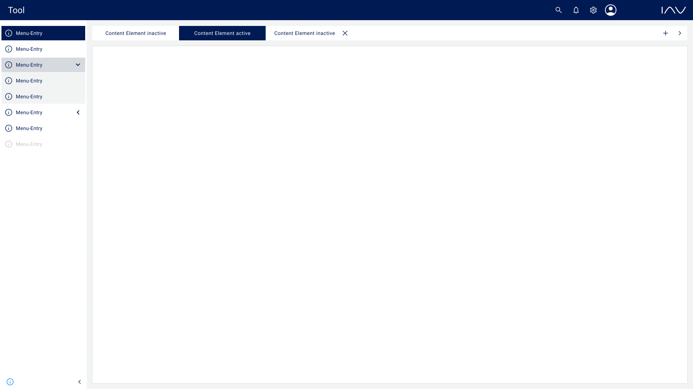
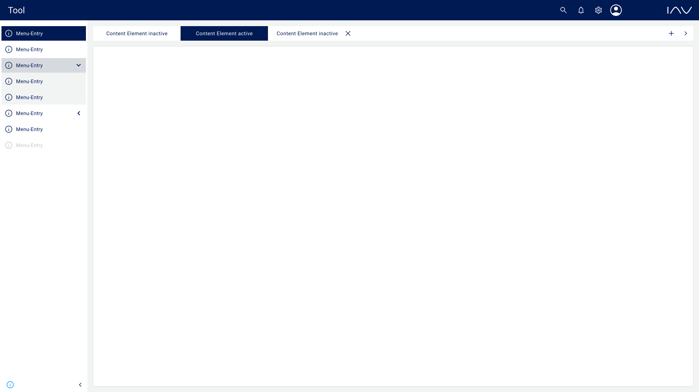

The IAV Frontend Framework enhances the development and maintenance of multiple frontend applications by centralizing key functionalities. It tackles common issues like maintainability and extendability, while minimizing the risk of errors through consistent, reusable components. Built with React, TypeScript, and AWS Amplify, it allows for rapid deployment of updates across projects. Key features include AWS Cognito authentication, internationalization, customizable themes, and the ability to integrate different corporate designs. By leveraging GitHub for version control and collaboration, developers benefit from streamlined workflows, centralized support, and reduced redundancy across projects.
This is the official documentation of the IAV frontend framework. The job of the framework is to make your life way easier. It achieves maintainability, extendability, a lower risk of faults, and a greater developer experience by generalization. You want to maximize the speed of your development process? Just have a look.
| Key | Value |
|---|---|
| Key dependencies | React 18, ReactDOM 18, Typescript 5, AWS Amplify 6 |
| UI-Component libraries | PrimeReact, PrimeIcons |
| Requirements | At least npm version 8 and node version 16 |
We manage bug reports and support requests through GitHub Issues. For more details on how to contribute, please read our Contributing Guidelines.
 
